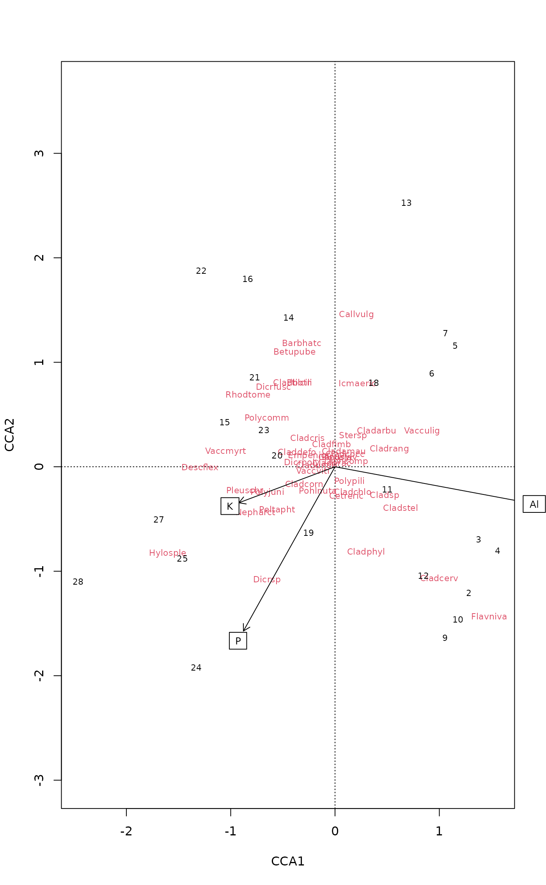

ordiArrowTextXY.RdSupport functions to assist with drawing of vectors (arrows) on
ordination plots. ordiArrowMul finds the multiplier for the
coordinates of the head of the vector such that they occupy
fill proportion of the plot region. ordiArrowTextXY
finds coordinates for the locations of labels to be drawn just
beyond the head of the vector.
ordiArrowTextXY(x, labels, display, choices = c(1,2), rescale = TRUE, fill = 0.75, at = c(0,0), ...) ordiArrowMul(x, at = c(0,0), fill = 0.75, display, choices = c(1,2), ...)
| x | An R object, from which |
|---|---|
| labels | Change plotting labels. A character vector of labels for
which label coordinates are sought. If not supplied, these will be
determined from the row names of |
| display | a character string known to |
| choices | Axes to be plotted. |
| rescale | logical; should the coordinates in or extracted from
|
| fill | numeric; the proportion of the plot to fill by the span of the arrows. |
| at | The origin of fitted arrows in the plot. If you plot arrows
in other places than origin, you probably have to specify
|
| ... |
ordiArrowMul finds a multiplier to scale a bunch of
arrows to fill an ordination plot, and ordiArrowTextXY finds
the coordinates for labels of these arrows. NB.,
ordiArrowTextXY does not draw labels; it simply returns
coordinates at which the labels should be drawn for use with another
function, such as text.
For ordiArrowTextXY, a 2-column matrix of coordinates for the
label centres in the coordinate system of the currently active
plotting device.
For ordiArrowMul, a length-1 vector containing the scaling
factor.
## Scale arrows by hand to fill 80% of the plot ## Biplot arrows by hand data(varespec, varechem) ord <- cca(varespec ~ Al + P + K, varechem) plot(ord, display = c("species","sites"))## biplot scores bip <- scores(ord, choices = 1:2, display = "bp") ## scaling factor for arrows to fill 80% of plot (mul <- ordiArrowMul(bip, fill = 0.8))#> [1] 2.074233bip.scl <- bip * mul # Scale the biplot scores labs <- rownames(bip) # Arrow labels ## calculate coordinate of labels for arrows (bip.lab <- ordiArrowTextXY(bip.scl, rescale = FALSE, labels = labs))#> [,1] [,2] #> Al 1.8804734 -0.3507570 #> P -0.9168309 -1.6419845 #> K -0.9931606 -0.3713207